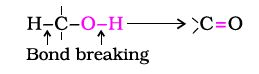
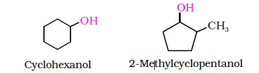
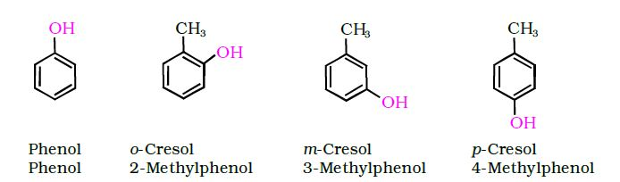
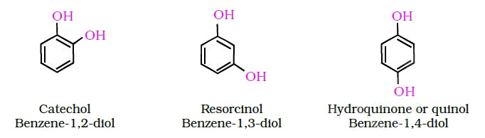
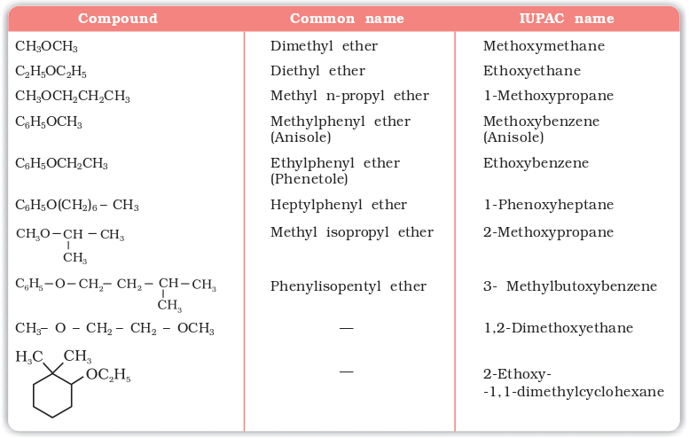
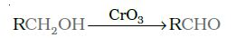
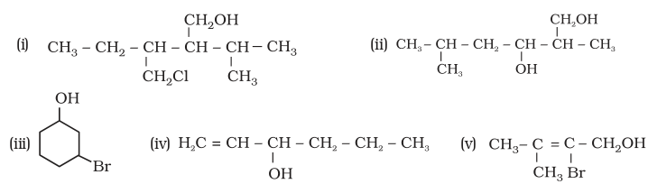

(a) Alcohols: The common name of an alcohol is derived from the common name of the alkyl group and adding the word alcohol to it. For example, CH3OH is methyl alcohol. According to IUPAC system (Unit 12, Class XI), the name of an alcohol is derived from the name of the alkane from which the alcohol is derived, by substituting 'e' of alkane with the suffix 'ol'. The position of substituents are indicated by numerals. For this, the longest carbon chain (parent chain) is numbered starting at the end nearest to the hydroxyl group. The positions of the –OH group and other substituents are indicated by using the numbers of carbon atoms to which these are attached. For naming polyhydric alcohols, the 'e' of alkane is retained and the ending 'ol' is added. The number of –OH groups is indicated by adding the multiplicative prefix, di, tri, etc., before 'ol'. The positions of –OH groups are indicated by appropriate locants e.g., HO–CH2–CH2–OH is named as ethane–1, 2-diol. Table 11.1 gives common and IUPAC names of a few alcohols as examples.
Table 11.1: Common and IUPAC Names of Some Alcohols

Cyclic alcohols are named using the prefix cyclo and considering the —OH group attached to C–1.

(b) Phenols: The simplest hydroxy derivative of benzene is phenol. It is its common name and also an accepted IUPAC name. As structure of phenol involves a benzene ring, in its substituted compounds the terms ortho (1,2- disubstituted), meta (1,3-disubstituted) and para (1,4-disubstituted) are often used in the common names.
Common name IUPAC name

Dihydroxy derivatives of benzene are known as 1, 2-, 1, 3- and 1, 4-benzenediol.
Common name IUPAC name

(c) Ethers: Common names of ethers are derived from the names of alkyl/ aryl groups written as separate words in alphabetical order and adding the word 'ether' at the end. For example, CH3OC2H5 is ethylmethyl ether.
Table 11.2: Common and IUPAC Names of Some Ethers

If both the alkyl groups are the same, the prefix 'di' is added before the alkyl group. For example, C2H5OC2H5 is diethyl ether.
Example 11.1
Give IUPAC names of the following compounds:

Solution
(i) 4-Chloro-2,3-dimethylpentan-1-ol (ii) 2-Ethoxypropane
(iii) 2,6-Dimethylphenol (iv) 1-Ethoxy-2-nitrocyclohexane
